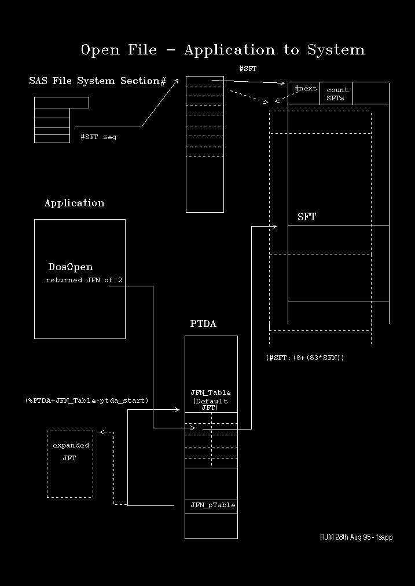

Open file system objects (files, named pipes, devices etc.) are represented by the SFT control block. The SFT contains three sections:
The kernel data section contains information to link the SFT to other system control blocks and to make the SFT usable by Kernel APIs. Of principle interest in this section are flags, handle, and pointer to the MFT and a chain pointer to other SFTs that represent other open instances of the same object. The kernel data is split into two discontiguous sections at each end of the SFT.
The file system independent data section contains information common to all FSDs needed to drive the file system. Of principle interest are the file attributes, open mode flags, opening process id and handle to the associated VPB.
The file system dependent data section is, as the name suggests, a work area private to the FSD that manages the file system object.
Note:
The .D SFT command formats the SFT always as if it is a FAT file. The information displayed in the file system dependent section may be misleading for non-FAT objects. The names of the fields formatted by .D SFT are prefixed sfdFAT_ for the file system dependent data so make it clear which information to treat with circumspection. The kernel and file system independent data name are prefixed with sf_ and sfi_ respectively.
When a file system object is opened, DosOpen returns a handle that represents the open object for all subsequent file system manipulation by the process until the object is closed. This handle is unique only within process and is referred to as the JFN. In protect mode processes the JFN is a 16-bit entity. In VDMs, however, to be consistent with DOS the JFN is an 8-bit entity, which may be correlated to the real JFN through a table in the PDB. This is illustrated later.
Each open file system object is also known by a system-wide unique handle, the SFN. Once the SFN is known then the corresponding SFT may be located and thence all file system information relating to the object.
Each process is assigned by default a table of 20 words, which is indexed by the JFN. Each word of the JFN_table contains the corresponding SFN for the open file. The default JFN_table is imbedded within the PTDA. Prefixing the JFN_table is a double-word pointer (JFN_ptable) that points to this table. If the table is expanded (using DosSetMaxFH) then JFN_ptable is updated to point to the current JFN_table.
The key to finding information about open object in a given process is to locate JFN_ptable and JFN_table. Since both of these fields are part of the PTDA they may be refered to by name as symbols for the current (system) context only. For other contexts we may still use the PTDA symbols but in a relative fashion. The PTDA symbols are defined for the current process, which means that to use them successfully for another process, one must relocate them to the PTDA one wishes to reference. This is easily done by subtracting the label PTDA_START from the desired symbol, then adding the address of the PTDA one wishes to see. For example: to see the jfn_table field, enter
dw <ptda address>+jfn_table-ptda_start L2.
The relationships between the JFN_table, PTDA and the SFT is illustrated in the following diagram: